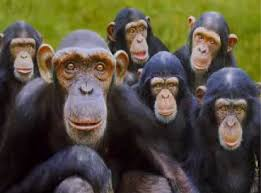
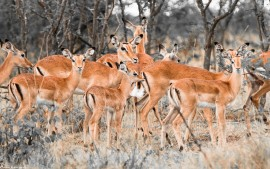

EMERSON WILDLIFE CONSERVANCY
who we are
what we do
Contact us
Audubon And Wildlife Gallery
Endangered Species
Donate
Full blog & News
Site Search
Our Wildlife . Our Heritage . Our Pride
Name
Emerson Wildlife Conservancy
Address
Administration Office - Nairobi
Phone
+254728427263
+254718401711
+25573356287
Wildlife Conservancy | Private Policy